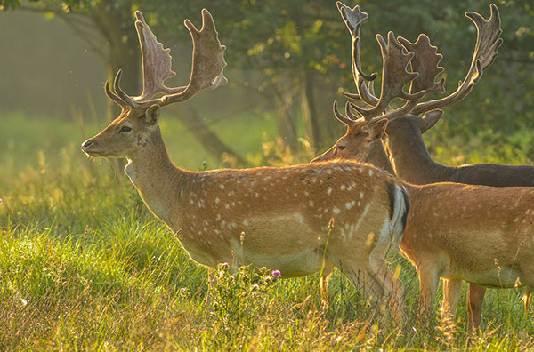
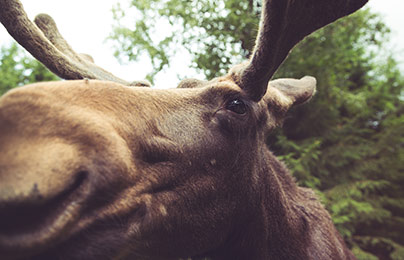

Les Cervidae
(Cervidae) forment une famille de ruminants munis de bois et de sabots de l’ordre des Ariodactyla (biongulés) comprenant 47 espèces dans le monde. On peut facilement distinguer les différents cerfs au Canada en décrivant leurs caractéristiques physiques, leurs habitats et leurs régimes alimentaires. J’ai utilisé ces critères pour décrire les cinq espèces de cerf au Canada : le Cerf de Virginie, le Cerf Mulet, le Caribou, l’Orignal et le Wapiti. la suite
